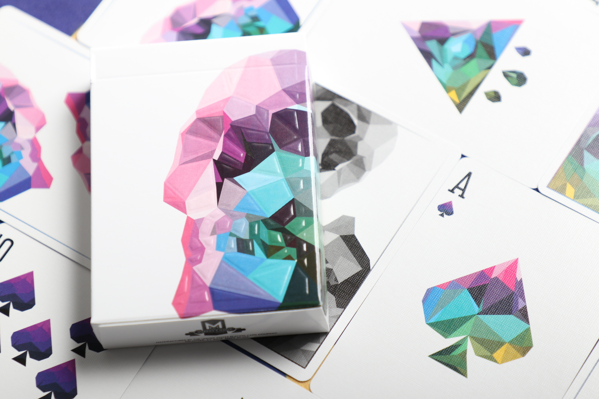
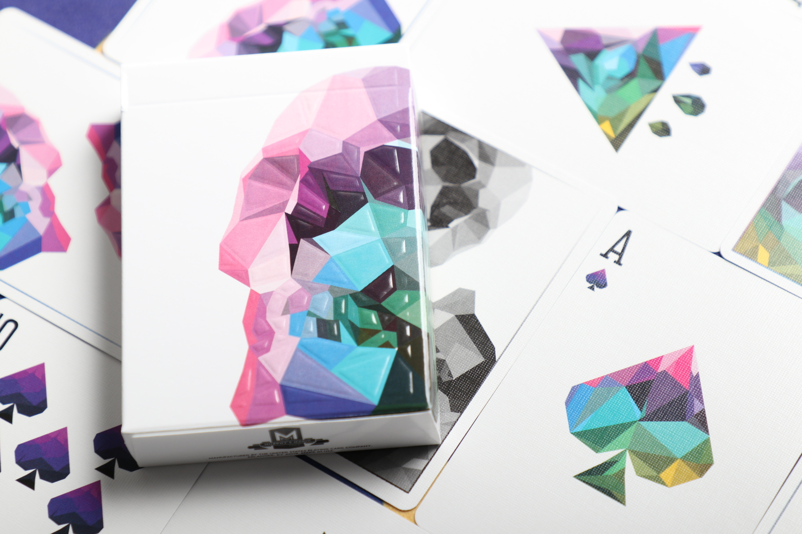

Memento Mori
El diseño low-poly representa un diseño simplista. Los "huesos" desnudos de la creación tridimensional y el arte gráfico, los primeros pasos de la animación, pueden interpretarse como el comienzo de la vida "virtual".
Un recordatorio constante de nuestro efímero paso por la Tierra.